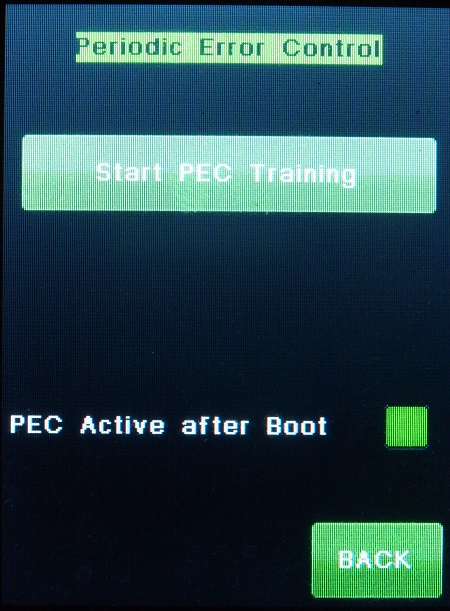

| Interactive Hand-Controller Menus - click on green button to Navigate |
|  |
This is the PEC menu when PEC has not been trained. Clicking on the Train PEC button will take you to a menu that looks like the main menu so that you can start trainig PEC by guiding. Warning: Note that if you are using PemPro or the Gemini.net driver to build your PEC data, that the "Include PEC Data" check box as described on page 23 of the Gemini.net ASCOM manual. Using PemPro, which requires use of the Gemini.net driver will not automatically store a PEC curve in the default Gemini.net data on your PC. |